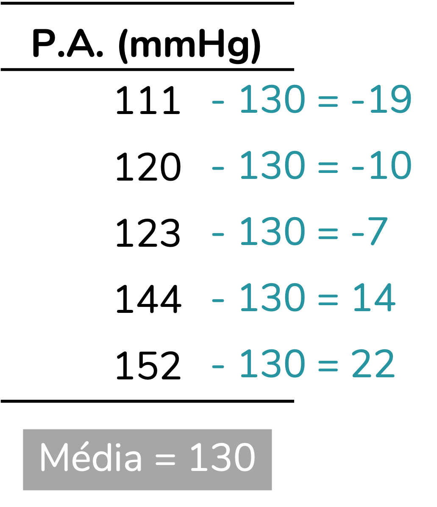
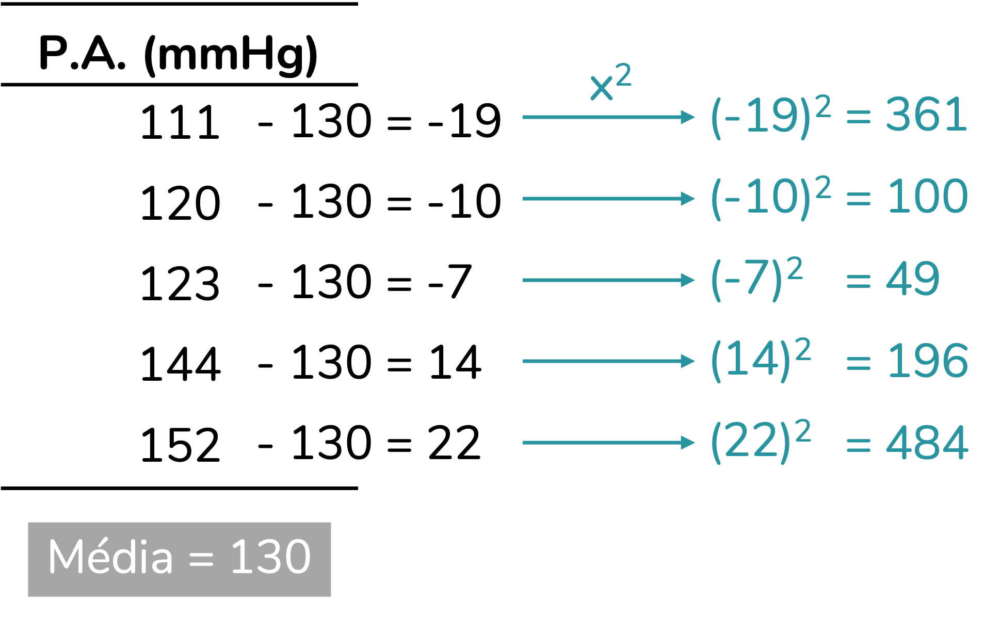
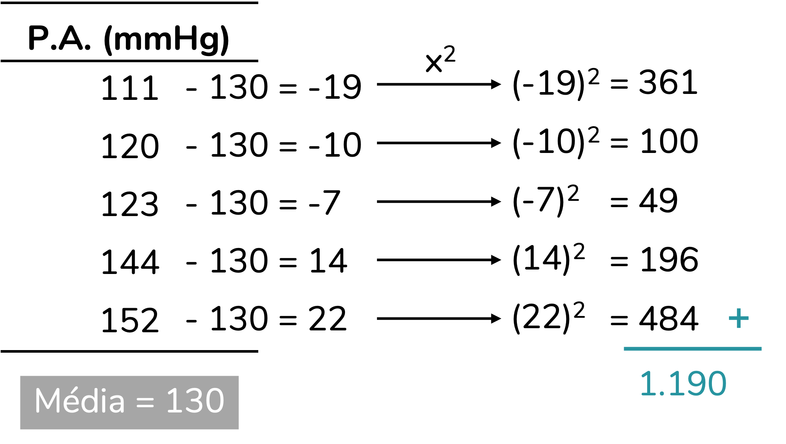
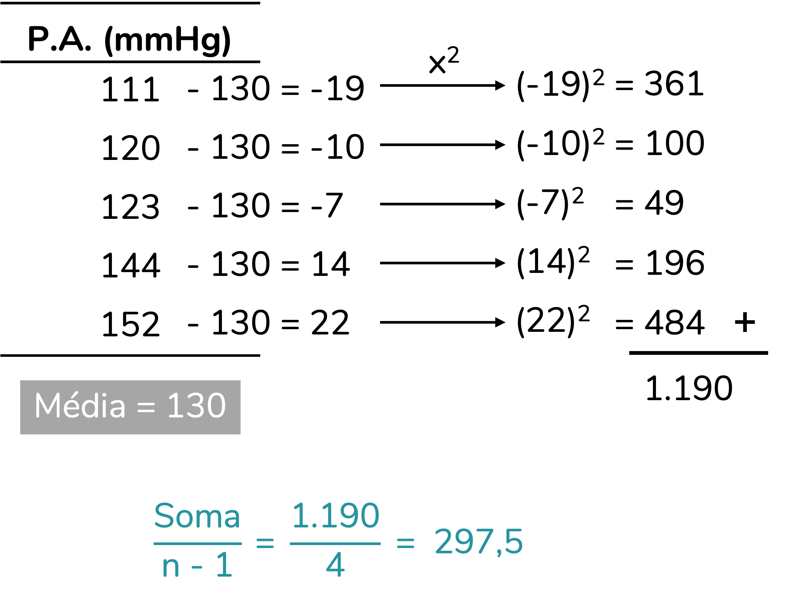
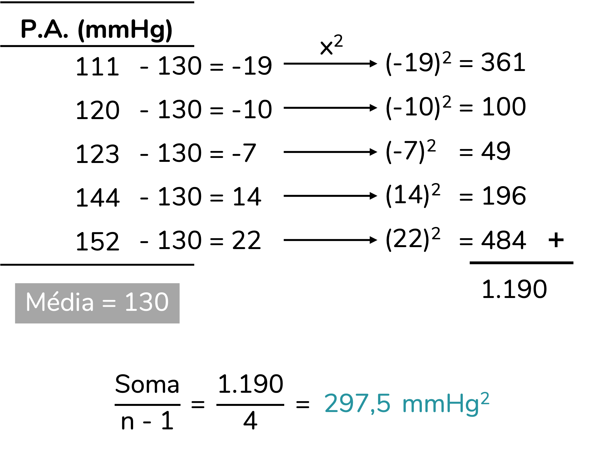
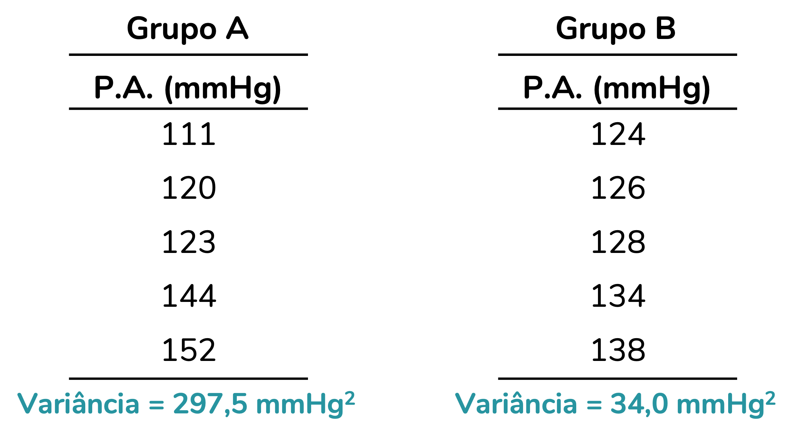

Por que você deveria se preocupar com a variação dos dados?
As medidas de tendência central, como a média, a moda e a mediana, são usadas para resumir um conjunto de dados. No entanto, na maior parte dos casos, é importante medirmos também a variação dos dados. Isso porque, ao olharmos apenas para uma medida resumo (como a média), podemos perder informações relevantes à nossa pergunta experimental.
Esse é um conteúdo que eu já gravei para o meu canal no YouTube. Caso prefira aprender em um vídeo, o link está aqui.
Imagine a seguinte situação: você tem dois grupos, um recebendo placebo e outro recebendo um anti-hipertensivo novo no mercado. Você, então, administra o medicamento aos pacientes de cada grupo, afere a pressão arterial de cada um deles e monta um gráfico com as médias de pressão em cada grupo:
Ótimo, o grupo que tomou anti-hipertensivo apresentou uma média de pressão arterial sistólica inferior à do grupo que tomou placebo. Mas… Será que investigar a média basta? Vamos olhar para esses dados com mais detalhes? No gráfico abaixo, o traço em preto representa a média e os círculos em amarelo correspondem à pressão arterial de cada participante.
Vou chamar sua atenção para uma coisa: a escala do gráfico acima é diferente da escala do primeiro gráfico. Isso porque em gráficos de barras é obrigatório que o eixo y inicie em zero (tenho uma discussão sobre isso aqui). Em gráficos de dispersão, nosso eixo y pode iniciar em um ponto diferente de zero, para facilitar a visualização dos dados. Aqui, ele inicia em 90.
Perceba uma coisa: ainda que a média tenha reduzido no grupo anti-hipertensivo, as pessoas desse grupo apresentam pressões arteriais muito diferentes entre si. Para algumas pessoas (os pontos amarelos mais altos), a pressão não baixou. Para outras (os pontos amarelos mais baixos), a pressão ficou bem baixa após a ingestão do medicamento. Ou seja, o efeito do anti-hipertensivo está variando muito. Essa variação (dispersão) é visível. Mas… Será que temos como quantificá-la? A resposta é sim.
A variância
Esse é um ponto do post em que eu poderia simplesmente te mostrar a fórmula para o cálculo da variância, uma das medidas que quantifica a variação dos dados. Mas eu não acho essa fórmula muito intuitiva, pelo menos não em um primeiro contato. O que eu vou fazer aqui é calcular a variância usando a lógica - mas, não se preocupe, eu vou seguir exatamente os mesmos passos da fórmula.
Vamos primeiro pensar no nosso objetivo: medir a variação dos dados. Para medir essa variação, a gente precisa ter um referencial. Nesse caso, eu quero medir a variação dos dados em relação à média. Ou seja, eu quero avaliar o quão distantes as pressões de cada participante estão da média do seu grupo. Esse é um cálculo bem simples, que você aprendeu na primeira ou segunda série. Sim, vamos fazer uma subtração.
Para simplificar o nosso cálculo, eu vou trabalhar com um único grupo de apenas cinco pessoas. O primeiro passo, como conversamos, será subtrair de cada valor a média do grupo:

Essas diferenças que calculamos podem ser chamadas de resíduos. Mas, veja, nós não queremos saber o quanto cada pessoa difere da média. Queremos saber o quanto o grupo, como um todo, está variando em relação à média. Ainda não temos essa informação. Uma possibilidade – que você também aprendeu na primeira série – seria somar essas diferenças, para uni-las. No entanto, perceba que temos valores negativos e positivos e que a soma seria zero. Como unir esses valores sem “cancelá-los”?
Uma possibilidade seria trabalharmos com o módulo (ou seja, o valor absoluto, desconsiderando o sinal) desses valores. Isso funcionaria. Mas não foi essa a estratégia utilizada no cálculo da variância. Para o cálculo da variância, a estratégia escolhida foi elevar essas diferenças ao quadrado. Lembre-se que elevar um número ao quadrado é o mesmo que multiplicá-lo por ele mesmo. E você aprendeu na sua trajetória escolar que, na multiplicação, positivo com positivo dá positivo e negativo com negativo dá negativo. Ou seja, quando elevamos um número positivo ao quadrado, ele segue sendo positivo. Quando elevamos um número negativo ao quadrado, ele passa a ser positivo. Pronto, resolvemos o nosso problema dos sinais. A vantagem de trabalharmos com o quadrado ao invés do módulo é dar mais peso a valores mais distantes da média.

Pronto! Agora podemos unir (somar) esses valores para saber a variação total do grupo em relação à média:

A soma dá 1.190. Mas, temos que pensar em mais uma coisa: essa soma é influenciada pela quantidade de pessoas incluídas no grupo. Quanto maior for esse grupo, maior será a soma. Portanto, faria sentido dividir essa soma pela quantidade de pessoas incluídas no cálculo.
Mas aqui o cálculo vai depender do nosso delineamento. Se estamos estudando uma população, iremos dividir essa soma por N, sendo N o tamanho da população. Se estamos estudando uma amostra, dividiremos a soma por n-1, sendo n o tamanho da amostra. Esse “menos 1” é uma forma de sermos mais rígidos com o cálculo por estarmos trabalhando com uma amostra, e não com toda a população. O n-1, nesse contexto, pode ser chamado de grau de liberdade.
Explicar a diferença entre população e amostra está fora do escopo deste post. Mas eu tenho uma explicação bem detalhada aqui.
No nosso exemplo, vou assumir que estamos trabalhando com uma amostra. Portanto, vou dividir a soma por n-1. Como havia 5 pessoas na amostra, nosso n = 5. Logo, dividirei a soma por 4:

Esse valor de 297,5 é uma medida de variação chamada variância. Sim, acabamos de calcular manualmente a variância dessa amostra.
Quero chamar a sua atenção com relação a mais uma coisa: ok, a variância é 297,5. Mas é 297,5 o que? Começamos com pressões arteriais que estavam em mmHg. Podemos pensar que chegamos a uma medida de 297,5 mmHg. Mas, esse pensamento está errado. Quando elevamos os valores ao quadrado, no meio da nossa conta, acabamos elevando ao quadrado também a nossa unidade de medida. Portanto, a nossa variância é de 297,5 mmHg²:

Você pode ter pensado “poxa, não sei como interpretar essa unidade de medida ao quadrado”. A boa notícia é: nem você, nem ninguém. Por ter a unidade de medida elevada ao quadrado, a variância não é diretamente interpretável. A única interpretação que conseguimos fazer é: quanto maior a variância, mais os dados estão variando em relação à média.
Observe os dois grupos abaixo, que apresentam a mesma média, 130 mmHg. É visível que o grupo A varia mais em relação à média. A variância confirma essa nossa percepção: o grupo A apresenta uma variância bem maior que a do grupo B, indicando que as pressões no grupo A variam mais em relação à média.

Ok, já entendemos que o “ao quadrado” complica a interpretação. Você pode estar se perguntando: “mas não temos como nos livrar dele?”. A resposta, de novo, está na matemática que você aprendeu na escola: para nos livrarmos de um “ao quadrado”, tiramos a raiz quadrada. Esse é exatamente o cálculo de outra medida de variação, mais famosa que a variância por sua interpretabilidade: o desvio-padrão.
O desvio-padrão
O desvio-padrão, como eu já te adiantei, consiste na raiz quadrada da variância. Ao calcularmos a raiz quadrada da variância amostral, obtemos o desvio-padrão amostral. Se calcularmos a raiz quadrada da variância populacional, obtemos o desvio-padrão populacional. A vantagem do desvio-padrão é que, ao tirarmos a raiz quadrada, chegamos à unidade de medida original, o que facilita a nossa interpretação. Veja como ficaria o desvio-padrão para os grupos A e B:

Perceba que a interpretação que discutimos para a variância se mantém: quanto maior o desvio-padrão, mais os dados variam em relação à média. Mas agora, como temos uma medida de variação na unidade de medida original (mmHg), podemos ir além e dizer que as pressões arteriais no grupo A variam, em média, 14,25 mmHg para mais ou para menos, em relação à média. É isso que torna o desvio-padrão o grande queridinho quando se trata de medidas de variação em relação à média, a sua interpretabilidade.
Adicionando o desvio-padrão ao gráfico
Em geral representamos o desvio-padrão em gráficos como uma barra de erros. Para isso fazer sentido, vou criar um gráfico com os dados dos grupos A e B acima, ok?
Perceba que, apesar de os dois grupos terem a mesma média (barra horizontal na mesma altura), o grupo A apresenta um desvio-padrão bem maior. A barra de erros (T para cima e para baixo) do grupo A tem um tamanho de 14,25 mmHg (o desvio-padrão desse grupo) para cima e para baixo. Já a barra de erros do grupo B tem um tamanho de apenas 5,83 mmHg para cima e para baixo, uma vez que esse é o desvio-padrão desse grupo.
Símbolos usados para variância e desvio-padrão
Variância e desvio-padrão são medidas chamadas de medidas de dispersão – afinal, avaliam o quão dispersos os dados estão em relação à média. A variância amostral é representada por um “s” ao quadrado. Já a variância populacional é representada pela letra grega sigma minúscula (σ) também ao quadrado. O desvio-padrão, por sua vez, segue essa mesma representação, mas sem o “ao quadrado”. O quadro abaixo resume essas representações:
Mas, e a fórmula?
Eu desenvolvi essa explicação que você acabou de ler há uns bons anos, quando precisei explicar desvio-padrão no cursinho comunitário em que eu era professora. Desde então já expliquei variância e desvio-padrão dessa forma para várias turmas de graduação e pós-graduação. E em todas essas turmas sempre surgia um aluno indignado com a quantidade de passos e querendo apenas “aplicar a fórmula”. Eu entendo. Vamos à fórmula, então.
Vamos entender primeiro a fórmula da variância amostral (s²). O numerador (parte de cima) dessa fórmula está nos dizendo para calcular a somatória (\(\sum\)) dos seguintes resultados: cada valor (\(x_i\)), menos a média da amostra (\(\bar{x}\)), elevado ao quadrado. O denominador nos diz para dividir esse resultado pelo tamanho da amostra (n) menos 1. Note que, para aplicar a fórmula, precisamos seguir exatamente os mesmos passos do post.
A fórmula da variância populacional (σ²) é praticamente idêntica, traz apenas uma mudança no denominador. O numerador nos diz para calcular a somatória (\(\sum\)) dos seguintes resultados: cada valor (\(x_i\)), menos a média da população (μ), elevado ao quadrado. O denominador nos diz para dividir essa soma pelo tamanho da população (N). Ou seja, mesmos passos, mas agora, como estamos trabalhando com uma população, não há o “menos 1” no denominador.
Já as fórmulas dos desvios-padrão são simples: correspondem à raiz quadrada da variância. Perceba que não temos como calcular manualmente o desvio-padrão sem realizar o cálculo da variância.
Dá sempre esse trabalho calcular a variância e o desvio-padrão?
Aqui calculamos a variância e o desvio-padrão à mão. Eu sempre brinco com os alunos que calcular o desvio-padrão à mão constroi caráter. E, de fato, eu acho esse um passo fundamental para entender o que, afinal, é o desvio-padrão. Se ele aparece magicamente na sua tela ao digitar um comando, é bem difícil você entender qual o seu propósito.
Mas, Fernanda, então você está me dizendo que tem como o desvio-padrão aparecer magicamente na minha tela? Sim! Podemos calculá-lo no Excel, no R ou em qualquer programa de estatística. A tabela abaixo resume as fórmulas usadas no Excel e no R para esse cálculo. No R, as funções calculam apenas a versão amostral (que é a mais utilizada). Para calcular as versões populacionais precisamos criar uma função personalizada, ou partir para algum pacote.
Vou aproveitar para incluir aqui um glossário. Em inglês, variância é variance. Já desvio-padrão é standard deviation. Por isso a fórmula em R para o desvio-padrão é sd().
A média não é tudo nessa vida
Para encerrar esse post (aliás, se ele foi útil, me conta nos comentários?) eu preciso te lembrar que nem sempre a média é a medida-resumo mais adequada a um conjunto de dados. A média é uma medida bem sensível a valores discrepantes (que chamamos em inglês de outliers). Lembre-se que variância e desvio-padrão são medidas de dispersão baseadas na média. Portanto, se a média não for uma representação adequada daquele conjunto de dados, a variância e o desvio-padrão também não o serão. Uma possibilidade nesses casos é calcular a amplitude interquartil, que eu discuto em detalhes aqui.
Como citar esse post, nas normas da ABNT
PERES, Fernanda F. O que é variância? E desvio-padrão?. Blog Fernanda Peres, São Paulo, 03 jan. 2025. Disponível em: https://fernandafperes.com.br/blog/variancia-desvio-padrao/.